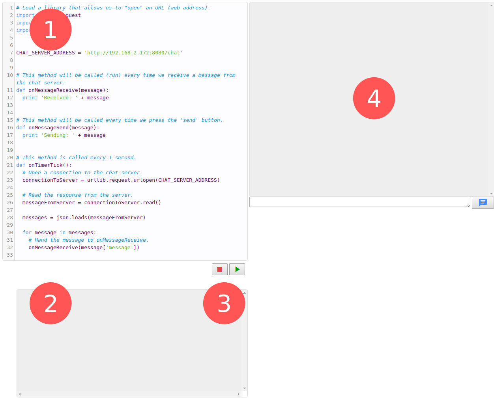

Below is an image of the environment we'll be working in.
It's divided into four parts:
The code editor where we will write all the code for our chat client.
The code output window where we can print for instance
debugging information to, to help us while we're developing our code.
The start and stop buttons that will make the code run.
The chat UI, which is where we will type in our chat messages and see
everybody else's messages.

Yo, world!
Let's write our first line of code and test that it works.
At the bottom of the code editor, write:
Hello world!
The chat framework.
Now let's have a look at the code. Trust me, it's really not as scary
as it might seem at first.
The idea of a "framework" is to have some premade code that does
the heavy work while leaving some blank spots for us to fill in and
do what we want. Observe:
From the comments (the description in pink) we can already get a good idea
about what this code is supposed to do.
But the best way to make sure is always to test run it and see what the result
actually is.
Press the
play_arrow
run button and see how the onTimerTick() function prints a message every second.
Tick!
Tick!
...
Now press the
stop
stop button to pause that function while we're working on it.
Lastly try the
chat
send button and see the onMessageSend(message) function is called.
Send: hi
If you typed a message into the chat input you should see that printed
out as well.
A simple chat client.
One easy first step to make our chat client useful is to have it echo
back any message we try send.
Let's have a quick look at the existing, very convinient addTextToChat(..) function:
So if we call this function, we can add a text to the chat window.
Let's try that out in the onMessageSend(..) function:
Now try type a message into the chat input and press send.
The message will show up in the chat output above.
Next let's quickly add that to the receiving function as well so we
might see any incoming messages:
If we try run that, that will not however do anything much.
To find out why we need to look at one of the other functions.
So while receiveAllMessages() will call onMessageReceive(..), there's
still nothing calling the former in the first place.
But we already know a handy place to so do:
Press the run button to check this does in fact work.
Tick!
Received: hi!
We need to go deeper.
Chat apps can't be complete without stickers.
We can add emoji and pictures as well.
For example, when the user type ':jackolantern:' into the chat, we'll show the picture of jack-o'-lantern, using the addImageToChat(..) function.
And smiles!
Ok, perhaps something a bit more useful would be to add smileys.
Luckily, as it turns out, that is as straight forward as adding stamps:
Now here's something we haven't seen so far: a 'method',
.replace(..), that isn't defined anywhere in our code.
It is in fact a method built into 'strings' (text objects), which
the official Python documentation describes as follows:
string.replace(s, old, new[, maxreplace])
Return a copy of string s with all occurrences of substring old replaced by new.
If the optional argument maxreplace is given, the first maxreplace occurrences are replaced.
https://docs.python.org/2/library/string.html
Documentation might be a bit dry and difficult to make sense of if you're
not used to it.
Luckily you won't really need to for this project,
but it's still nice to know where to look if you ever need to.
What the documentation is telling us is simply that we can call
s.replace(old, new)
on any string to get a copy of 's' with 'old' replaced with 'new':
I am a string!
I am the best string!
There are however many more smileys so we could start adding more
replace statements:
But wait! Surely we can come up with something smarter than that!
Perhaps we can apply some kind of loop, iterating through all the smileys?
A for-loop iterates through all the 'keys' (the values on the left side)
of a 'map' like SMILEY_MAP.
So first smiley would be ':)', and
SMILEY_MAP[smiley] would be '☺️'.
Then smiley would be ':D' and so on.
Now we just have to fill in the SMILEY_MAP. :)
Who sent that message?
Even with all the smileys and awesome stamps, the chat is still
not too useful, if we can't keep track of who's saying what.
Upon closer inspection we can see our server automatically attaches
sender information to all messages.
This comes in the form of the sender's 'Network Address' (IP), which gives
us some some idea where the message came from.
Look closely at the onMessageReceive(..) function and you'll see that
we're also given a 'sender' argument, which contains this information.
The code below shows how to display that 'sender' information in the chat box:
When you run this code you'll now see all messages have something like
"192.168.34.175, says:" in front of it.
Peter Steiner, The New Yorker, July 5, 1993.
All together now
The chat window is turning into a bit of a busy mess, so let's try put it
all together to make it look better.
Let's start by looking at how we're currently adding things to the chat window:
So maybe instead of using this simply 'wrapper' we can start using the
underlying functions and decide for ourselves what it's going to look like.
We have the following functions to play with:
These functions gives us some freedom to compose the building blocks
of the chat window and decide how we want it to look.
For instance, try something like this:
To make it a little easier to recognise who's writing, we can also add
a generated placeholder user image, an "identicon":
A cool feature of these images is that they are completely random,
but at the same time always the same when generated from the same text.
In this case we used the sender address, so the same address
will always generate the same user image.
(See 'Hashing')
More for pros
Hi! .. Hi! .. Hi! ...
You might have noticed that the same messages appear again and again
every time the clock ticks:
Tick!
Received: Hi!
Tick!
Received: Hi!
...
This is because every time receiveAllMessages() ask messages
the server returns the last 20 messages it received.
This means we have to do some more work to avoid showing the same messages
over and over again.
Guess which number I'm thinking of!
Another interesting challenge is to build your own mini game into the chat.
For instance have the program come up with a random number everyone has
to guess which number it is.
The 'random' module has a function, random.randint(min, max)
that generates random numbers (integers) between min and max:
4
The trick would then be to save the number, check each
received message against our number, and then send a message when someone
gets it right.